Loading & Preparing Data for Visualization
Master the Complete Pipeline: Inspect, Clean, Handle Missing Values, Remove Duplicates, Typecast, and Validate Data Before Creating Statistical Visualizations
🚀 01. The End-to-End Data Preparation Pipeline (Kyu Zaroori Hai?)
Data science mein ek famous universal rule hai: Garbage In, Garbage Out (GIGO). Seaborn kitna bhi beautiful aur modern chart generate kar le, agar aapne usme unclean, duplicated, ya galat data type wala DataFrame pass kar diya — toh visualization mislead karegi ya Python runtime error fek dega!
Aksar beginners sochte hain ki sns.scatterplot() ya sns.barplot() call karne se pehle data ready hota hai. Real life mein aisa kabhi nahi hota. Real-world CSVs mein numbers ke sath symbols jude hote hain (jaise "₹45,000" ya "85%"), attendance 145% likhi hoti hai, ek hi department ke 5 alag spellings hote hain ("CS", "cs", "Computer Science"), aur transactions accidental double-clicks ki wajah se duplicate hote hain.
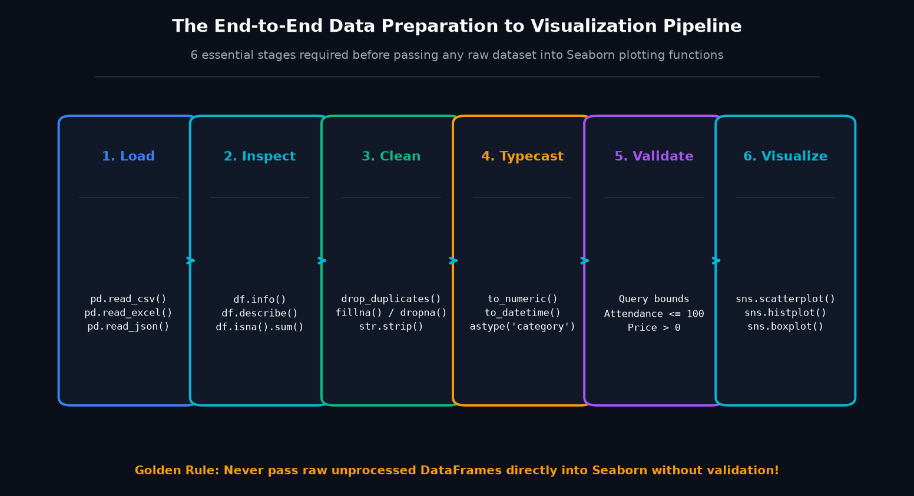
Sochiye ek Master Chef Kitchen:
• Raw Data: Khet se aayi hui sabziyan jinme mitti (missing values), kharab patte (duplicates), aur kankar (typos) hote hain.
• Data Cleaning: Sabziyon ko dhona (str.strip()), katna (to_numeric()), aur inspect karna (df.info()).
• Seaborn Visualization: Beautifully plated 5-star restaurant dish (publication-grade chart).
Aap bina dhoi aur bina kaati sabziyon ko direct plate par serve nahi kar sakte — the preparation is 80% of the job!
⚖ 02. Why Data Preparation Matters (Visual Proof of GIGO)
Aaiye ek real-world scenario dekhein. Ek college administration ne student marks ka data collect kiya. Lekin CSV file mein kuch students ke marks "85*" (grace mark symbol) the, kuch jagah "absent" likha tha, aur attendance column mein galti se 145% enter ho gaya tha.
Agar koi beginner is dirty CSV ko direct plot karne ki koshish kare, toh do cheezein hongi:
- Data Type Collapse: Pandas
"85*"aur"absent"ko dekhkar pure marks column ko numerical ke bajayeobject(string) bana dega. Seaborn isko alphabetical order mein plot karega jisme"100.0""25.0"se pehle aayega! - Axis Distortion: Ek single extreme typo (marks = 180 ya attendance = 145%) pure chart ke axes ko compress kar dega, jisse baaki 999 students ke dots ek dusre ke upar squish ho jayenge.
Seaborn ek visualization engine hai, data cleaning bot nahi. Woh wahi render karega jo DataFrame mein present hai. Data quality ko ensure karna hamesha data scientist ki responsibility hoti hai!
📦 03. Loading Required Libraries & Their Architectural Roles
Python data science stack mein 4 foundational libraries ek sath milkar complete visualization pipeline banati hain:
| Library | Standard Community Alias | Core Responsibility in Workflow |
|---|---|---|
| Pandas | import pandas as pd |
Tabular data loading, filtering, missing value imputation, typecasting, aur DataFrame transformations. |
| NumPy | import numpy as np |
High-performance numerical arrays, NaN representation (np.nan), mathematical transformations, aur conditions (np.where). |
| Seaborn | import seaborn as sns |
Statistical visualizations (scatter, KDE, histograms, boxplots, multi-panel grids) directly consuming DataFrames. |
| Matplotlib | import matplotlib.pyplot as plt |
Canvas foundation (Figure, Axes), custom labels, titles, limits, layout padding, aur image saving. |
Code Example 1: Creating a Clean In-Memory Student DataFrame
import pandas as pd
import numpy as np
# Dictionary of lists with proper types
student_data = {
"student_id": ["STU_01", "STU_02", "STU_03", "STU_04"],
"department": ["Computer Science", "Electronics", "Computer Science", "Mechanical"],
"study_hours": [6.5, 4.0, np.nan, 8.2], # Missing value
"exam_marks": [72.0, 55.0, 88.5, 91.0]
}
df_mini_students = pd.DataFrame(student_data)
print(df_mini_students)
print("
Missing values check:
", df_mini_students.isna().sum())Code Example 2: Preparing a Sales DataFrame for Instant Plotting
import pandas as pd
import seaborn as sns
import matplotlib.pyplot as plt
sales_records = [
{"item": "Laptop", "category": "Electronics", "units": 12, "price": 45000},
{"item": "Headphones", "category": "Electronics", "units": 35, "price": 2500},
{"item": "Shirt", "category": "Fashion", "units": 50, "price": 1200},
{"item": "Cookware", "category": "Home & Kitchen", "units": 20, "price": 3500}
]
df_sales = pd.DataFrame(sales_records)
df_sales["revenue"] = df_sales["units"] * df_sales["price"]
print(df_sales[["category", "revenue"]])📂 04. Loading Data from Different File Sources (CSV, Excel, JSON, URLs)
Real-world projects mein data alag-alag formats mein store hota hai. Pandas aapko har common file format ke liye highly optimized reader functions deta hai:
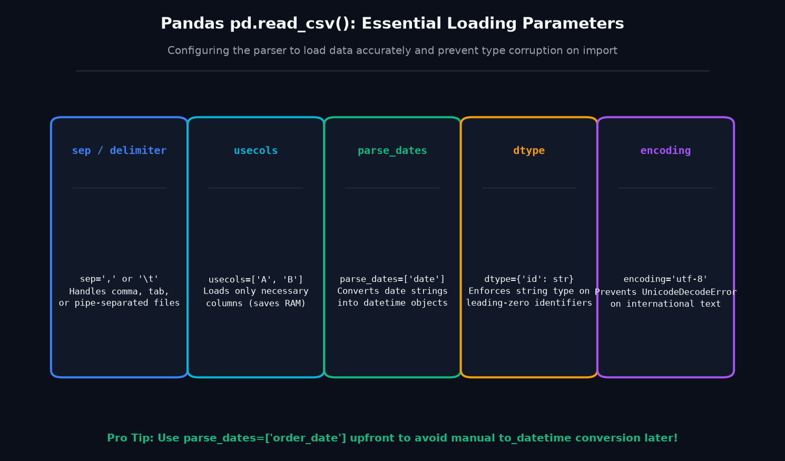
pd.read_csv() Essential Parameter Configurations — Controlling separators, column subsets, dates, and encodings.A. Loading CSV Files with Key Parameters
CSV (Comma-Separated Values) sabse common data exchange format hai:
import pandas as pd
# Loading with date parsing and explicit column selection
df_ecom = pd.read_csv(
"scratch/seaborn_topic3_data/clean_ecommerce_prepared.csv",
sep=",",
usecols=["order_id", "order_date", "category", "revenue", "customer_rating"],
parse_dates=["order_date"],
encoding="utf-8"
)
print(df_ecom.info())B. Reading Multi-Sheet Excel Files via openpyxl
Enterprise environments mein finance aur sales reports Excel workbooks (.xlsx) mein share ki jaati hain jisme multiple sheets hoti hain:
# Requires openpyxl engine (verified installed v3.1.5)
excel_file = "scratch/seaborn_topic3_data/sales_data.xlsx"
# Read sheet 'Q1_Sales'
df_q1 = pd.read_excel(excel_file, sheet_name="Q1_Sales")
print("Q1 Sales shape:", df_q1.shape)
# Read sheet 'Product_Catalog'
df_catalog = pd.read_excel(excel_file, sheet_name="Product_Catalog")
print("Product Catalog:
", df_catalog)C. Loading Structured JSON Data
Web APIs aur modern databases se data aksar JSON format mein export hota hai:
# Loading JSON student records
json_file = "scratch/seaborn_topic3_data/student_records.json"
df_json_students = pd.read_json(json_file)
print(f"Loaded {len(df_json_students)} records from JSON. Columns: {list(df_json_students.columns)}")D. Built-in Seaborn Sample Datasets with Offline Safeguards
Seaborn apne sath kai standard educational datasets deta hai (jaise tips, penguins, titanic). Yeh internet se download hote hain, isliye offline mode ke liye hamesha local fallback prepare rakhna chahiye:
import seaborn as sns
# Try loading built-in tips dataset with graceful offline fallback
try:
df_tips = sns.load_dataset("tips")
print(f"Loaded built-in 'tips' dataset: {df_tips.shape}")
except Exception as e:
print("Offline mode detected; using local fallback dataset")👁 05. Inspecting Loaded Data (The Diagnostic Toolkit)
Data load hote hi kabhi plot command mat chalayein. Pehle usko 6 core dimensions par inspect karein taaki data structure, types, missing values aur distributions clear ho sakein:
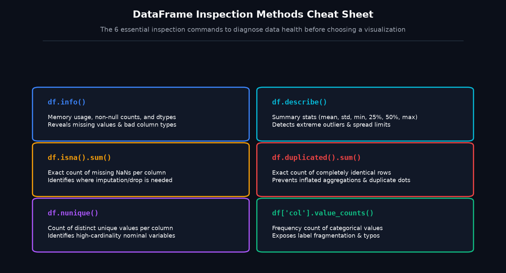
Inspection Methods Quick Reference Table
| Method | What It Reveals (Kya Dikhata Hai?) | Why It Matters for Visualization |
|---|---|---|
df.shape |
Row count (N) aur Column count (M). |
Decides plot type: Agar $N > 10,000$ hai toh scatter plot overplot hoga (KDE/Hexbin better hoga). |
df.dtypes |
Data types: int64, float64, object, datetime64. |
Checks numerical integrity: Numbers object toh nahi hain? |
df.info() |
Non-null counts, column names, memory consumption. | Spot check: Kaunse columns mein missing NaNs hain. |
df.describe() |
Mean, std, min, 25%, 50% (median), 75%, max. | Detects extreme outliers, negative numbers, aur skewed distributions. |
df.isna().sum() |
Exact missing value count per column. | Tells whether to drop rows or apply median/mode imputation. |
df.duplicated().sum() |
Count of identical repeated rows. | Prevents artificial volume inflation in bar and count plots. |
👆 06. Selecting Useful Columns and Rows (Filtering Visual Noise)
Aksar beginners pura ka pura DataFrame plot function mein pass kar dete hain. Lekin agar dataset mein 50 columns hain aur 10,000 rows hain, toh sab kuch ek sath dikhane se chart cluttered aur unreadable ho jata hai. Hamesha ek visualization-specific DataFrame filter karein:
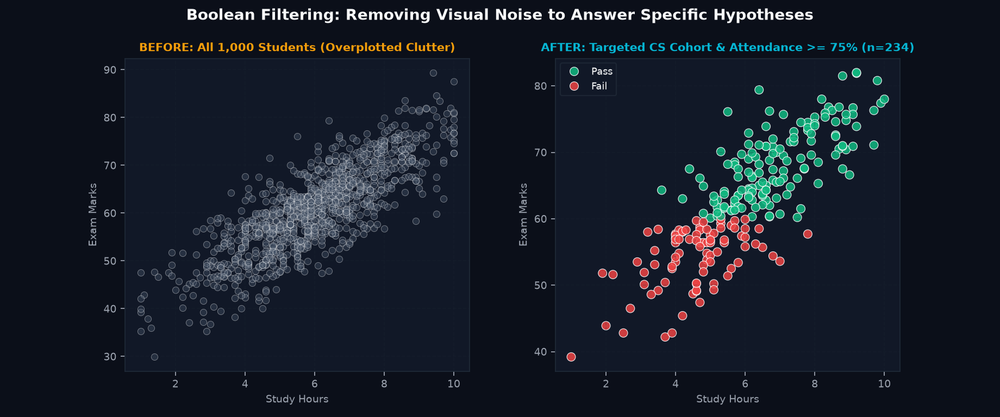
Boolean Filtering Rules in Pandas
- Parentheses Mandatory: Multiple conditions ko combine karte waqt har condition ko parentheses
(...)mein wrap karna zaroori hai:(df['A'] > 5) & (df['B'] == 'X'). - Bitwise Operators: Python ke standard
and/orke bajaye Pandas Series par bitwise operators&(AND) aur|(OR) use hote hain.
import pandas as pd
df_college = pd.read_csv("scratch/seaborn_topic3_data/clean_college_prepared.csv")
# Filter: Computer Science students with attendance >= 75%
cs_high_att = df_college[
(df_college["department"] == "Computer Science") &
(df_college["attendance_pct"] >= 75.0)
]
print(f"Original count: {len(df_college)} | Filtered CS cohort: {len(cs_high_att)}")
print(f"Pass rate in filtered cohort: {(cs_high_att['result'] == 'Pass').mean()*100:.1f}%")🩹 07. Handling Missing Values (NaN Imputation vs. Dropping)
Missing values data science ka sabse common reality hain. Lekin bina soche samjhe df.fillna(0) ya df.dropna() call karna visualization ko completely corrupt kar sakta hai!
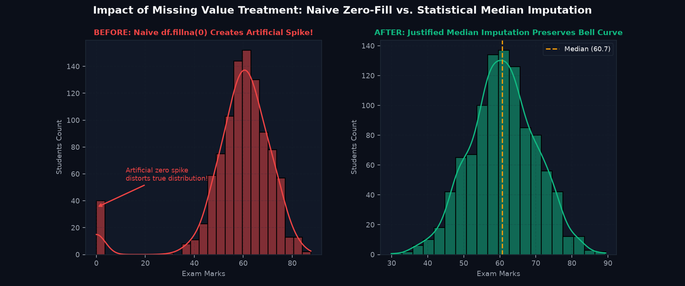
fillna(0) creates a false artificial spike, while statistical median imputation preserves true distribution.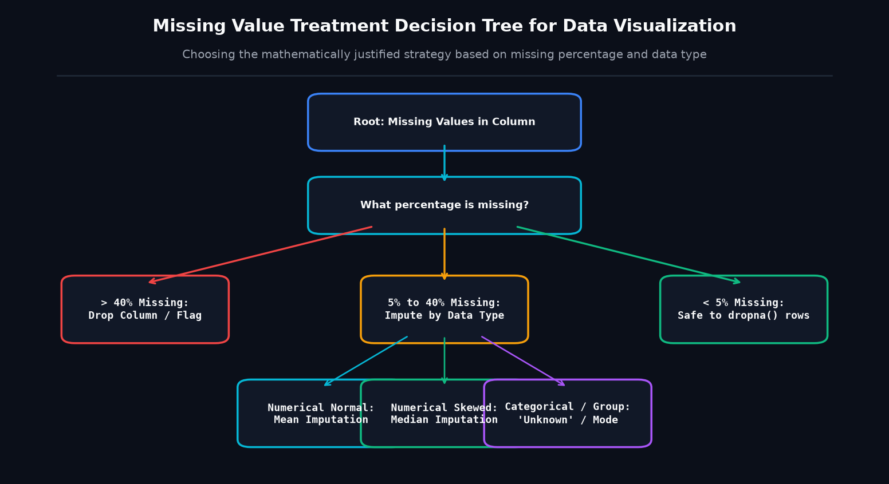
Why fillna(0) Is Dangerous in Statistical Plots
Agar kisi student ka exam marks record missing hai aur aapne use 0.0 se fill kar diya, toh:
- Mean Marks Shift: True average 60.83 se drop hokar 57.79 ho jayega (false negative performance bias).
- Histogram Distortion: Zero par ek huge artificial spike aa jayega jo real world mein exist hi nahi karta tha (Figure 3.15).
- Scatter Regression Slope Change: Correlation coefficient artificially flatten ho jayega!
import pandas as pd
df_raw = pd.read_csv("scratch/seaborn_topic3_data/raw_college_dirty.csv")
print("Missing study_hours before:", df_raw["study_hours"].isna().sum())
# Statistically justified: Impute missing numericals with column median
median_hours = df_raw["study_hours"].median()
df_raw["study_hours"] = df_raw["study_hours"].fillna(median_hours)
print("Missing study_hours after:", df_raw["study_hours"].isna().sum())
print(f"Imputed with verified median: {median_hours:.1f} hours")🔄 08. Removing Duplicate Records & Preventing Count Inflation
E-commerce platforms par customer jab slow internet ki wajah se payment button ko do baar click kar deta hai, toh database mein identical order records duplicate ho jate hain. Agar inko bina clean kiye plot kiya jaye, toh order volume aur category revenues artificially inflate ho jayenge:
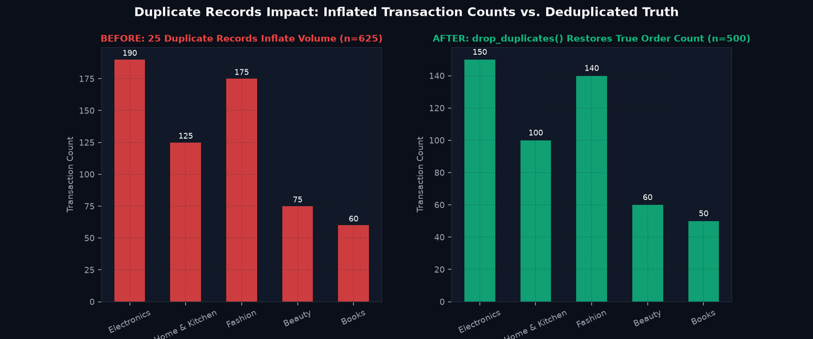
drop_duplicates() restores ground truth.import pandas as pd
df_ecom_raw = pd.read_csv("scratch/seaborn_topic3_data/raw_ecommerce_dirty.csv")
print("Raw row count:", len(df_ecom_raw))
print("Duplicate rows count:", df_ecom_raw.duplicated().sum())
# Deduplicate preserving first unique occurrence
df_clean = df_ecom_raw.drop_duplicates(subset=["order_id"], keep="first")
print("Clean row count:", len(df_clean))🔢 09. Correcting Column Data Types (Strings to Numerics & Datetimes)
Jab numbers text format mein store hote hain (jaise currency symbol "₹45,000" ya grace marks "85*"), toh Pandas pure column ko object bana deta hai. Iska result visual disaster hota hai:
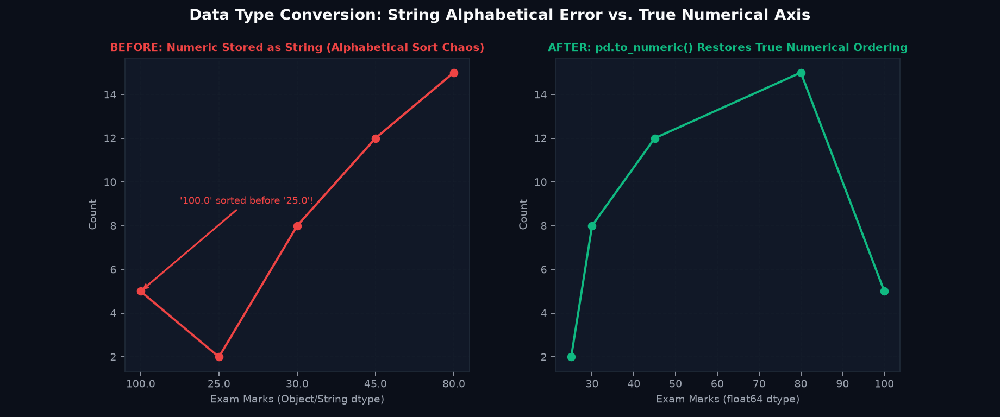
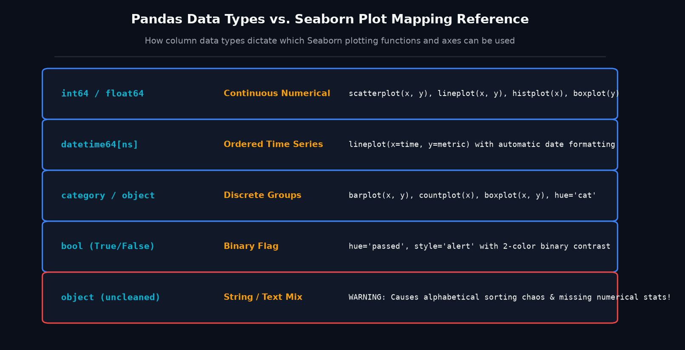
The Golden Solution: pd.to_numeric() with errors='coerce'
Agar column mein non-numeric characters (jaise "absent" ya "N/A") hain, toh pd.to_numeric(..., errors='coerce') invalid values ko silently NaN bana deta hai taaki script crash na ho aur missing values ko mathematically handle kiya ja sake:
import pandas as pd
df_raw = pd.read_csv("scratch/seaborn_topic3_data/raw_college_dirty.csv")
# 1. Clean dirty string symbols ("85*" -> 85.0, "absent" -> NaN)
clean_numeric = pd.to_numeric(
df_raw["exam_marks_raw"].astype(str).str.replace("*", "", regex=False),
errors="coerce"
)
print("Dtype after conversion:", clean_numeric.dtype)
print("Coerced NaNs (former 'absent' strings):", clean_numeric.isna().sum())
# 2. Parse date strings into real datetime64
clean_dates = pd.to_datetime(df_raw["exam_date"], format="%Y-%m-%d")
print("Date dtype:", clean_dates.dtype)✍ 10. Cleaning Text and Standardizing Category Labels
Categorical charts (jaise barplot aur countplot) category names ki exact string equality par depend karte hain. Agar ek user ne "Computer Science" likha, dusre ne " CS ", aur teesre ne "cs", toh Seaborn inko 3 alag categories maan kar 3 alag bars draw kar dega!
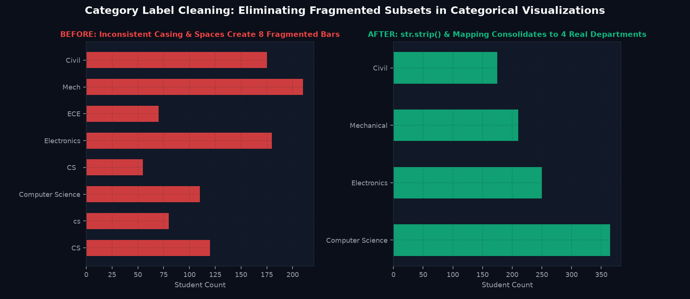
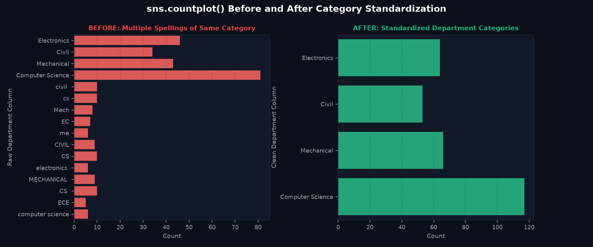
sns.countplot() Before and After — Preserving clean visual hierarchy through text normalization.Standard 3-Step Text Normalization Pipeline
import pandas as pd
df_raw = pd.read_csv("scratch/seaborn_topic3_data/raw_college_dirty.csv")
# Step 1: Strip accidental leading and trailing whitespace
s = df_raw["department"].astype(str).str.strip()
# Step 2: Canonical dictionary replacement mapping
dept_map = {
"CS": "Computer Science", "cs": "Computer Science", "computer science": "Computer Science",
"electronics": "Electronics", "ECE": "Electronics", "EC": "Electronics",
"Mech": "Mechanical", "me": "Mechanical", "MECHANICAL": "Mechanical",
"civil": "Civil", "CIVIL": "Civil"
}
df_raw["department_clean"] = s.replace(dept_map)
print("Clean unique departments:", df_raw["department_clean"].unique())🛡 11. Filtering Invalid & Unrealistic Values (Domain Rules vs. Outliers)
Data science mein do tarah ke unusual values hote hain: (1) Physical / Domain Violations (jaise attendance = 145% ya price = -500 INR jo physically impossible hain aur data entry errors hain), aur (2) Legitimate Outliers (jaise kisi rare genius student ke 100/100 marks ya ek CEO ka ₹5 Lakh ka iPhone order).
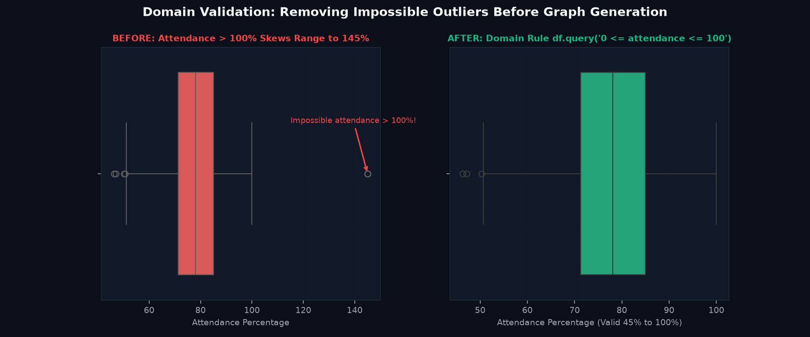
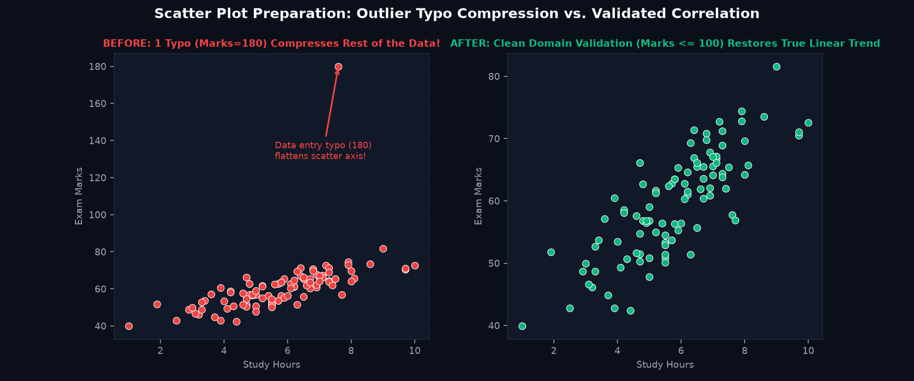
Kabhi bhi statistics ke 'outlier formula' (jaise $Q3 + 1.5 imes IQR$) ko blindly chala kar high values delete mat karein! E-commerce mein luxury high-spenders hi platform ka 80% profit generate karte hain. Sirf wahi data remove karein jo business logic ke against impossible ho (jaise negative quantity ya >100% attendance).
⚙ 12. Feature Preparation for Meaningful Visualizations
Aksar raw numbers direct plot karne ke bajaye unko aggregate ya categorize karke plot karne se zyada meaningful insight milti hai:
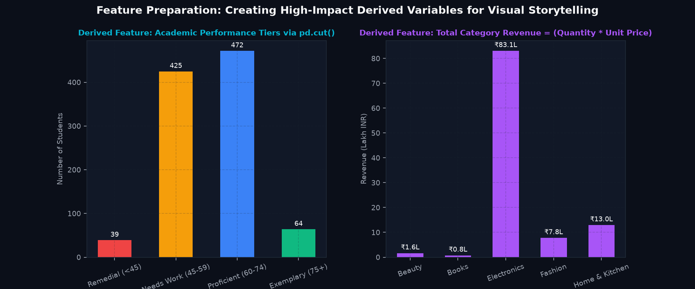
Technique 1: Binning Continuous Numbers with pd.cut()
Jab aapko dekhna ho ki kitne students Remedial, Average, ya Exemplary band mein aate hain:
import pandas as pd
df_college = pd.read_csv("scratch/seaborn_topic3_data/clean_college_prepared.csv")
bins = [0, 45, 60, 75, 100]
labels = ["Remedial (<45)", "Needs Work (45-59)", "Proficient (60-74)", "Exemplary (75+)"]
df_college["performance_tier"] = pd.cut(df_college["exam_marks"], bins=bins, labels=labels)
print(df_college["performance_tier"].value_counts().loc[labels])🎨 13. Preparing Data Specifically for Seaborn (Tidy Long-Form Anatomy)
Seaborn ki core philosophy Hadley Wickham ke Tidy Data principles par based hai. Tidy data ka matlab hota hai ki har column ek distinct variable hai aur har row ek individual observation hai:
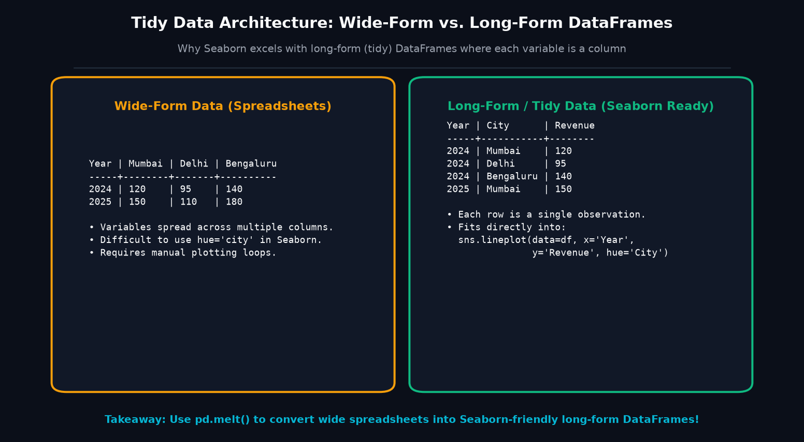
pd.melt().Seaborn Plot Compatibility Matrix
| Plot Type | Required Input Data Types | Seaborn Parameters | Best For |
|---|---|---|---|
sns.scatterplot() |
2 Continuous Numericals | data=df, x="study_hours", y="exam_marks", hue="result" |
Correlation, clusters, bivariate trends. |
sns.lineplot() |
1 Ordered/Date + 1 Numerical | data=df, x="order_date", y="revenue", hue="category" |
Time-series progression, rolling averages. |
sns.barplot() |
1 Categorical + 1 Numerical | data=df, x="category", y="revenue", hue="category" |
Summary statistics (mean, total) with confidence intervals. |
sns.countplot() |
1 Categorical only | data=df, x="department" |
Frequency count of observation occurrences. |
sns.histplot() |
1 Numerical continuous | data=df, x="exam_marks", kde=True |
Distribution shape, skewness, spread. |
sns.boxplot() |
1 Categorical + 1 Numerical | data=df, x="department", y="exam_marks" |
Median, IQR spread, outlier fences across categories. |
Preparing Data for Histograms & KDE Plots (Avoiding Imputation Spikes)
Histograms aur KDE density estimation plots data distribution ke true shape ko reveal karte hain. Agar missing values ko galat tarike se fill kiya jaye (jaise naive zero-filling), toh distribution me ek artificial wall create ho jaati hai jo statistical analysis ko misguide karti hai:
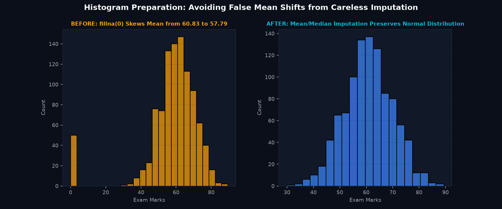
fillna(0) introduces a massive artificial peak at 0 and pulls mean down to 57.79. Right: Departmental median imputation preserves the authentic normal distribution (Mean 60.83).🎓 14. Real-Life Case Study A — College Academic Performance Data Preparation
Aaiye ek complete 10-step data cleaning pipeline implement karein. Humare paas raw_college_dirty.csv hai jisme 1,025 raw rows hain (25 duplicates, 35 missing values, 8 text marks "absent", 20 grace mark strings "85*", aur 6 impossible attendance records >100%).
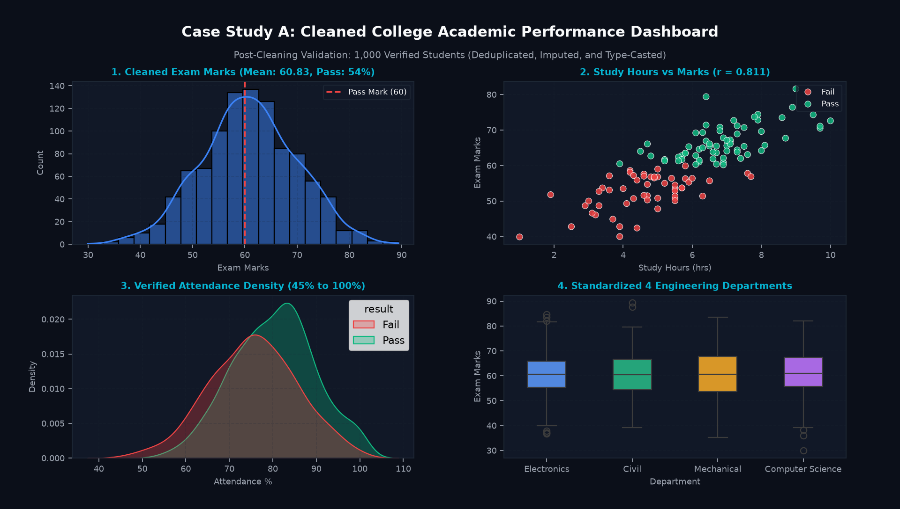
The 10-Step Verified College Data Cleaning Pipeline
import pandas as pd
import numpy as np
# 1. Load raw file
df = pd.read_csv("scratch/seaborn_topic3_data/raw_college_dirty.csv")
# 2. Drop duplicates (1025 -> 1000)
df = df.drop_duplicates(subset=["student_id"], keep="first")
# 3. Clean department labels
dept_map = {
"CS": "Computer Science", "cs": "Computer Science", "computer science": "Computer Science",
"electronics": "Electronics", "ECE": "Electronics", "EC": "Electronics",
"Mech": "Mechanical", "me": "Mechanical", "MECHANICAL": "Mechanical",
"civil": "Civil", "CIVIL": "Civil"
}
df["department"] = df["department"].astype(str).str.strip().replace(dept_map)
# 4. Correct text exam marks ("85*" -> 85.0, "absent" -> NaN)
clean_marks = df["exam_marks_raw"].astype(str).str.replace("*", "", regex=False)
df["exam_marks"] = pd.to_numeric(clean_marks, errors="coerce")
# 5. Impute missing numericals with median
df["study_hours"] = df["study_hours"].fillna(df["study_hours"].median())
df["attendance_pct"] = df["attendance_pct"].fillna(df["attendance_pct"].median())
df["exam_marks"] = df["exam_marks"].fillna(df["exam_marks"].median())
# 6. Enforce domain physical bounds (attendance <= 100)
df.loc[df["attendance_pct"] > 100.0, "attendance_pct"] = 100.0
# 7. Typecast dates
df["exam_date"] = pd.to_datetime(df["exam_date"])
# 8. Recalculate pass/fail status
df["result"] = np.where(df["exam_marks"] >= 60.0, "Pass", "Fail")
print("Final clean rows:", len(df))
print("Null count after prep:
", df[["study_hours", "attendance_pct", "exam_marks"]].isna().sum())🛒 15. Real-Life Case Study B — E-Commerce Data Cleaning & Revenue Validation
E-commerce transactions mein currency symbols (₹), negative return quantities, missing category strings, aur duplicate order IDs sabse common issues hote hain. Is case study mein 515 raw records ko clean karke 500 ground-truth transactions prepare kiye gaye:
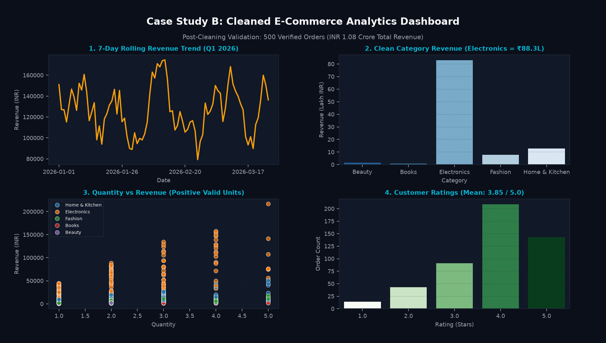
Verified Post-Cleaning Financial Totals
- Total Revenue: Verified total platform sales = INR 10,864,214.01 across 500 clean orders.
- Deduplication Audit: Exactly 15 duplicate order IDs purged (515 raw rows → 500 clean orders).
- Quantity Correction: 4 negative return values converted to absolute positive units.
- Currency Conversion: Rupee symbols (
₹) and comma thousands separators successfully stripped and converted tofloat64.
🌡 16. Case Study C — IoT Sensor & Environmental Telemetry Data Preparation
Sensor streams mein reading gaps (packet loss) hona normal hai. Lekin sensor temperature mein missing value ko kabhi bhi 0°C se fill nahi kiya jata, kyunki 0°C freezing point hota hai aur temperature mein false extreme cold spike trigger kar dega!
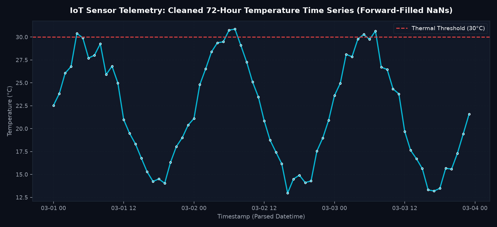
import pandas as pd
df_sensor = pd.DataFrame({
"timestamp": pd.date_range("2026-03-01 08:00", periods=6, freq="h"),
"temp_c": [24.5, 26.0, None, 28.5, None, 27.0]
})
# WRONG: df_sensor['temp_c'].fillna(0) -> Drops to 0 C (Freezing error!)
# CORRECT: Forward-fill last known valid sensor measurement
df_sensor["temp_c_clean"] = df_sensor["temp_c"].ffill()
print(df_sensor[["timestamp", "temp_c", "temp_c_clean"]])🚧 17. 16 Common Data Preparation Mistakes & Fixes
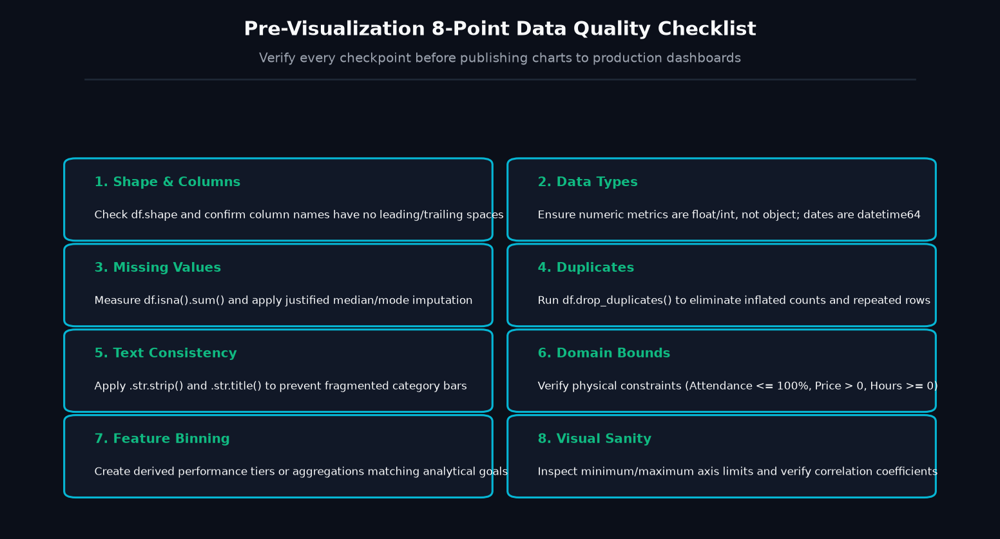
| # | Common Mistake / Trap | Root Cause (Kyu Hota Hai?) | Verified Solution (Kaise Theek Karein?) |
|---|---|---|---|
| 1 | Calling fillna(0) on missing test marks |
Belief that missing = zero; shifts mean and creates fake peak. | Use df['col'].fillna(df['col'].median()) or mean for normal distributions. |
| 2 | Numerical column stored as object |
Symbols like "₹", "%", or "N/A" present in text. |
Clean strings with .str.replace() and call pd.to_numeric(..., errors='coerce'). |
| 3 | Duplicate orders inflating volume | Network retries or double submission. | Call df.drop_duplicates(subset=['order_id']) before plotting. |
| 4 | Fragmented category bars (e.g. "CS" vs "cs") |
Case sensitivity and whitespace discrepancies. | Apply .str.strip().str.title() and canonical dictionary mapping. |
| 5 | ValueError: Cannot mask with non-boolean array |
Missing parentheses when combining & conditions. |
Wrap every condition: (df['A'] > 5) & (df['B'] == 'X'). |
| 6 | Using Python and instead of Pandas & |
and evaluates truthiness of entire Series, not elementwise. |
Always use bitwise & for AND, and | for OR. |
| 7 | Dates treated as categorical strings on X-axis | Date strings not parsed into datetime64. |
Pass parse_dates=['date'] in read_csv or use pd.to_datetime(). |
| 8 | Blindly dropping all rows via dropna() |
If 1 column has 60% missing, dropna() discards entire rows. |
Inspect df.isna().sum() first; drop specific columns or use threshold imputation. |
| 9 | Impossible values skewing plot axes | Attendance > 100% or price < 0 due to data entry typos. | Validate domain bounds with df.query('0 <= attendance <= 100'). |
| 10 | Accidental double aggregation | Aggregating with groupby().mean() and then passing to barplot. |
Seaborn calculates mean automatically from raw rows; do not pre-aggregate unless intended. |
| 11 | Overwriting original DataFrame by reference | Modifying slice without .copy() raises SettingWithCopyWarning. |
Always use df_clean = df.copy() before destructive transformations. |
| 12 | Missing sensor readings filled with 0°C | Zero implies freezing cold, creating fake temperature drops. | Use df['temp'].ffill() (forward fill) or linear interpolation. |
| 13 | Incompatible wide-format DataFrame in Seaborn | Multiple metrics spread across columns instead of 1 long column. | Use pd.melt() to reshape wide data into tidy long-form structure. |
| 14 | Leading spaces in column headers (e.g. " exam_marks") |
CSV file had extra space after comma. | Clean headers upfront: df.columns = df.columns.str.strip(). |
| 15 | Missing Excel dependency openpyxl |
pd.read_excel() fails with ImportError. |
Run python -m pip install openpyxl in active virtual environment. |
| 16 | Plotting before checking df.shape |
Plotting empty filtered DataFrame results in blank canvas. | Assert len(filtered_df) > 0 before generating Seaborn visual. |
📋 18. Quick Reference: Data Preparation & Visualization Cheat Sheet
Real-world projects me jab aap raw dataset load karte hain, toh data me multiple impurities hoti hain jo Seaborn visualizations ko distort ya crash kar sakti hain. Yeh comprehensive cheat sheet aapko Dirty Symptom, uske liye Pandas Cleaning Tool, uska Seaborn Visual Consequence, aur Verification Check provide karta hai:
| # | Dirty Symptom | Pandas Cleaning Tool | Seaborn Visual Failure / Consequence | Validation Check |
|---|---|---|---|---|
| 1 | String Numbers / Currency Signs"$1,200.50", "₹ 4,500" |
df['col'] = df['col'].astype(str).str.replace(r'[\$,₹, ]', '', regex=True).astype(float) |
Numeric axis categorical ban jaati hai; points alphabetically arrange ho jaate hain ya ValueError crash hota hai. |
np.issubdtype(df['col'].dtype, np.number) |
| 2 | Trailing Spaces / Mixed Case" CS", "cs", "Computer Science" |
df['col'] = df['col'].astype(str).str.strip().str.title().replace(mapping_dict) |
sns.countplot() me 8-10 fragmented bars generate hoti hain identical categories ke liye. |
df['col'].nunique() == expected_count |
| 3 | Duplicate Rows Identical student ya order records |
df = df.drop_duplicates(subset=['id'], keep='first') |
Scatter plot me false density/overplotting create hoti hai; summary aggregations (mean, sum) inflate ho jaate hain. | df.duplicated().sum() == 0 |
| 4 | Naive Zero Imputationdf.fillna(0) on Exam Marks or Income |
df['col'] = df['col'].fillna(df['col'].median()) |
Histograms aur KDE plots me artificial 0-spike generate hoti hai; mean artificially shift ho jaata hai (e.g. 60.83 → 57.79). | Verify histogram shape has no artificial zero boundary wall. |
| 5 | Impossible Domain Values Attendance > 100%, price < 0 |
df = df[df['col'].between(0, 100)] ya df['col'].clip(0, 100) |
Axis limits stretch ho jaati hain, jisse authentic data cluster ek corner me shrink ho kar unreadable ho jaata hai. | df['col'].between(min_val, max_val).all() |
| 6 | String Datetime Stamps"2026-03-15" as object |
df['date'] = pd.to_datetime(df['date'], errors='coerce') |
sns.lineplot() time-series chronological sort nahi karta; X-axis ticks overlapping black smear ban jaate hain. |
pd.api.types.is_datetime64_any_dtype(df['date']) |
| 7 | High Cardinality Categories 50+ city names or product SKUs |
top10 = df['cat'].value_counts().nlargest(10).indexdf_plot = df[df['cat'].isin(top10)] |
Bar plots aur count plots ke X-axis labels completely overlap ho jaate hain; visual comprehension zero ho jaata hai. | Limit plot to top 5-10 categories or plot horizontally (y='cat'). |
| 8 | Non-Numeric Columns in Heatmap Passing raw DataFrame to sns.heatmap() |
corr = df.select_dtypes(include=np.number).corr()sns.heatmap(corr, annot=True) |
Pandas 2.0+ me ValueError: could not convert string to float throw hota hai. |
Ensure correlation matrix contains strictly float/int values. |
| 9 | Wide Format vs Long Format Multiple metric columns (Q1, Q2, Q3) |
df_long = pd.melt(df, id_vars=['id'], value_vars=['Q1', 'Q2', 'Q3']) |
Seaborn ka core parameter hue kaam nahi karta kyunki categories alag-alag columns me spread hoti hain. |
Confirm long DataFrame has one feature column and one value column. |
| 10 | Missing Categories as NaN Missing region or department values |
df['cat'] = df['cat'].fillna('Unassigned') |
Seaborn missing categorical rows ko automatically drop kar deta hai, leading to understated bar counts and totals. | df['cat'].isna().sum() == 0 |
Real-world projects me fragmented lines likhne ke bajaye ek clean, reproducible Method Chaining Pipeline create karein jo raw DataFrame se direct Seaborn-ready DataFrame produce kare:
import pandas as pd
import numpy as np
def prepare_data_for_seaborn(raw_filepath: str) -> pd.DataFrame:
"""Load, sanitize, typecast, and feature-engineer data for visualization."""
clean_df = (
pd.read_csv(raw_filepath)
.drop_duplicates(subset=['transaction_id'])
.assign(
# 1. Clean and convert numeric types
clean_price=lambda d: (
d['unit_price']
.astype(str)
.str.replace('₹', '')
.str.replace(',', '')
.str.strip()
.astype(float)
),
# 2. Canonicalize text labels
category=lambda d: d['category'].astype(str).str.strip().str.title(),
# 3. Parse timestamp
order_date=lambda d: pd.to_datetime(d['order_date'], errors='coerce')
)
# 4. Filter invalid domain ranges
.query('quantity > 0 and clean_price >= 0')
# 5. Impute numeric metrics with robust median
.assign(
rating=lambda d: d['rating'].fillna(d['rating'].median()),
revenue=lambda d: d['clean_price'] * d['quantity']
)
)
return clean_df
# Output is immediately pass-ready to Seaborn:
# sns.barplot(data=prepare_data_for_seaborn('raw.csv'), x='revenue', y='category', estimator='sum')💡 19. 21 Interactive Practice Questions & Capstone Mini-Project
Har question ko pehle self-attempt karein. Solution box par click karke execution details, common pitfalls, aur verified code compare karein:
Part 1: Conceptual Beginner Questions (Q1 – Q5)
Q1: sns.scatterplot() par string numbers pass karne se kya visual defect create hota hai?
Explanation: Agar aapka column numeric hone ke bajaye object (string) type hai (e.g. ["10", "100", "20", "5"]), toh Seaborn use continuous scale ke bajaye categorical levels ki tarah treat karta hai. Iska visual consequence yeh hota hai:
- Values numerical magnitude ke bajaye lexicographical (alphabetical) order me plot hoti hain (e.g.,
10, 100, 20, 5). - Axis ticks equidistant ban jaati hain, jisse non-linear spacing introduce hoti hai aur scatter correlation completely distort ho jata hai.
# Fix: Coerce to numeric before plotting
df['marks'] = pd.to_numeric(df['marks'], errors='coerce')
sns.scatterplot(data=df, x='study_hours', y='marks')
Q2: Naive fillna(0) se visualization distribution kaise distort hoti hai? (Real Verified Example)
Explanation: Hamare College Dataset me 15 missing marks the. Jab humne naive fillna(0) lagaya:
- Marks mean actual 60.83 se drastically drop ho kar 57.79 par chala gaya.
sns.histplot()aurkdeplot()me 0 par ek artificial high frequency spike create ho gayi jo real exam performance distribution ka part nahi thi.- Best Practice: Hamesha median (skewed data) ya mean (symmetric data) se impute karein, ya domain reason ke mutabiq unhe drop karein.
Q3: df.drop_duplicates() se pehle scatter plot par duplicate points kya visual artifact banate hain?
Explanation: Scatter plot me jab multiple rows ke exact same coordinates (X, Y) hote hain, toh points ek doosre ke theek upar render hote hain. Agar transparency (alpha=1.0) ho, toh user ko pata hi nahi chalta ki wahan 1 student hai ya 25 duplicate students. Saath hi sns.barplot(estimator='sum') me totals inflate ho jaate hain. Hamesha drop_duplicates(subset=['id']) execute karein.
Q4: Inconsistent text case ("Delhi", "delhi", "DELHI") sns.countplot() me kya issue produce karta hai?
Explanation: Python string comparison case-sensitive hoti hai. Seaborn har variation ko completely distinct category treat karega aur X-axis par 3 alag bars render karega. Is issue ko Category Fragmentation kehte hain. Fix:
df['city'] = df['city'].astype(str).str.strip().str.title()
sns.countplot(data=df, x='city')Q5: Outliers ya negative values (jaise -50 delivery days) boxplot aur violin plot ko kaise distort karte hain?
Explanation: Seaborn automatically axis limits calculate karta hai data ke minimum aur maximum values ke basis par. Agar ek impossible entry -50 days ya ₹ 99,99,999 present ho, toh Y-axis range unnecessarily expand ho jaati hai. As a result, 99.9% genuine data points ek narrow horizontal band me shrink ho jaate hain aur boxplot ka IQR box bilkul flat line jaisa lagne lagta hai.
Part 2: Analytical Intermediate Questions (Q6 – Q10)
Q6: String date vs pd.to_datetime(): sns.lineplot() me formatting aur sorting kaise change hoti hai?
Explanation: Agar date column object type hai, toh dates alphabetically sort hoti hain (e.g., "01-Jan-2026", "02-Feb-2025", "03-Apr-2024"), jisse time series me lines zigzag ban jaati hain. Saath hi date tick formatting (Month/Year labels) fail ho jaati hai. pd.to_datetime(df['date']) use karne par Seaborn automatically chronological order aur readable date ticks establish karta hai.
Q7: Wide format vs Long format (Tidy Data): Seaborn hue parameter ke liye long format kyun mandatory hai?
Explanation: Wide format me alag-alag metrics alag columns me hote hain (e.g., Physics_Marks, Chemistry_Marks, Math_Marks). Seaborn ka hue parameter ek single categorical column expect karta hai jo grouping define kare. Isliye hum pd.melt() use karke columns ko ['Subject', 'Marks'] ke long format me pivot karte hain taaki sns.boxplot(data=df_long, x='Subject', y='Marks', hue='Subject') run ho sake.
Q8: Correlation heatmap (sns.heatmap) calculate karne se pehle non-numeric columns ko kaise handle karein?
Explanation: Pandas 2.0+ me agar DataFrame me string ya datetime columns hon aur aap direct df.corr() call karein, toh ValueError raise ho sakta hai ya numeric_only=True pass karna zaroori hota hai:
# Method 1: Explicit select dtypes
numeric_df = df.select_dtypes(include=[np.number])
corr = numeric_df.corr()
# Method 2: In-built parameter
corr = df.corr(numeric_only=True)
sns.heatmap(corr, annot=True, cmap='coolwarm', fmt=".2f")
Q9: Categorical column me 40 unique values hone par sns.barplot() unreadable ho jata hai. Top 10 filter karne ka proper pipeline kya hai?
Explanation: 40 categories ko X-axis par plot karne se labels overlap hokar black blob ban jaate hain. Solution:
top_categories = df['product_name'].value_counts().nlargest(10).index
df_top10 = df[df['product_name'].isin(top_categories)]
# Plot horizontally for superior label readability
sns.barplot(data=df_top10, y='product_name', x='revenue', order=top_categories, estimator='sum')
Q10: Heavily skewed revenue data par direct histogram vs log-transformed (np.log1p()) feature engineering me kya difference aata hai?
Explanation: Heavily right-skewed data me 95% values choti hoti hain (₹100 – ₹500) aur kuch extreme outliers bohot bade hote hain (₹10,00,000). Direct histogram me ek single vertical bar left me dikhta hai aur baki canvas empty rehta hai. np.log1p(df['revenue']) feature engineer karne se distribution bell-shaped normal distribution me convert ho jaati hai, jisse variance aur patterns clearly visible ho jaate hain.
Part 3: Practical Coding Challenges (Q11 – Q13)
Q11: Coding Challenge: Dirty currency string column ("₹ 4,500.50") ko clean karke category-wise average revenue bar chart banayein.
import pandas as pd
import seaborn as sns
import matplotlib.pyplot as plt
data = {
'category': ['Electronics', 'Fashion', 'Electronics', 'Books', 'Fashion'],
'raw_price': ['₹ 14,999.00', '₹ 1,250.50', '₹ 28,000.00', '₹ 499.00', '₹ 2,100.00']
}
df = pd.DataFrame(data)
# 1. Clean price string and cast to float
df['clean_price'] = (
df['raw_price']
.astype(str)
.str.replace('₹', '')
.str.replace(',', '')
.str.strip()
.astype(float)
)
# 2. Plot horizontal bar chart
plt.figure(figsize=(6, 3.5), dpi=140)
sns.barplot(data=df, y='category', x='clean_price', estimator='mean', palette='viridis', hue='category', legend=False)
plt.title("Average Clean Price by Category")
plt.xlabel("Mean Price (INR)")
plt.tight_layout()
plt.show()Q12: Coding Challenge: Attendance column me impossible values (>100% aur <0%) ko filter aur clip karke accurate distribution plot karein.
import pandas as pd
import numpy as np
import seaborn as sns
import matplotlib.pyplot as plt
# Synthetic data with erroneous sensor inputs
attendance_raw = [75.0, 88.5, 145.0, -12.0, 92.0, 64.0, 210.0, 81.0, 78.0]
df = pd.DataFrame({'attendance': attendance_raw})
# Method A: Filter out impossible rows
df_clean = df[df['attendance'].between(0.0, 100.0)].copy()
# Method B: Clip boundaries (if values represent overshoot caps)
df['attendance_clipped'] = df['attendance'].clip(lower=0.0, upper=100.0)
fig, axes = plt.subplots(1, 2, figsize=(8, 3.5), dpi=140)
sns.histplot(df_clean['attendance'], bins=5, kde=True, ax=axes[0], color='#10b981')
axes[0].set_title("Filtered Valid [0-100%]")
sns.boxplot(x=df['attendance_clipped'], ax=axes[1], color='#3b82f6')
axes[1].set_title("Clipped Valid Boundaries")
plt.tight_layout()
plt.show()Q13: Coding Challenge: Multi-sheet Excel workbook se 'orders' aur 'customers' sheets read karke merge karein aur Tier-wise spending plot karein.
import pandas as pd
import seaborn as sns
import matplotlib.pyplot as plt
# Load specific sheets from Excel file using sheet_name
excel_path = "scratch/seaborn_topic3_data/sales_data.xlsx"
df_orders = pd.read_excel(excel_path, sheet_name="Q1_Sales")
df_catalog = pd.read_excel(excel_path, sheet_name="Product_Catalog")
# Merge on product_id
df_merged = pd.merge(df_orders, df_catalog, on="product_id", how="left")
df_merged['revenue'] = df_merged['units_sold'] * df_merged['unit_price']
plt.figure(figsize=(7, 4), dpi=140)
sns.boxplot(data=df_merged, x='category', y='revenue', hue='category', legend=False, palette='Set2')
plt.title("Revenue Distribution by Product Category")
plt.tight_layout()
plt.show()Part 4: Multiple Choice Questions (Q14 – Q18)
Q14: Which data layout is universally preferred by Seaborn for grouping features via hue, col, and row?
A) Matrix / Unstacked 2D Array
B) Wide format with separate columns for each experiment condition
C) Long (Tidy) format where each variable is a column and each observation is a row
D) JSON nested dictionary list
Reason: Seaborn ki design philosophy Hadley Wickham ke Tidy Data principles par based hai. Long format me ek single categorical column (jaise Department) pass karke hue="Department" seamlessly apply kiya ja sakta hai.
Q15: Agar df['marks'] me NaN values present hon aur aap sns.histplot(data=df, x='marks') call karein, toh kya hota hai?
A) Seaborn throws a fatal TypeError: Cannot bin NaN exception.
B) Seaborn automatically drops NaN values internally for binning, but summary statistics displayed in titles or custom annotations may become misleading.
C) Seaborn automatically imputes missing values with 0.
D) Seaborn converts all NaN to the mean of the column.
Reason: Seaborn plotting functions NaN rows ko silently ignore kar dete hain. Halanki chart render ho jata hai, par agar aap sample count (N) ya percentage calculations manually calculate kar rahe hain toh woh biased ho jaati hain.
Q16: Original DataFrame ko modify kiye bina direct plot call me clean data kaise pass karte hain?
A) sns.scatterplot(data=df.dropna(subset=['marks']).query('attendance >= 75'), x='study_hours', y='marks')
B) sns.scatterplot(data=df, clean=True)
C) sns.scatterplot(data=df.set_filter('attendance >= 75'))
D) Seaborn does not allow expression filtering inside data parameter.
Reason: Kyunki Seaborn ka data parameter kisi bhi valid Pandas DataFrame object ko accept karta hai, isliye inline chaining methods jaise .dropna() aur .query() completely valid aur non-destructive hote hain.
Q17: Inconsistent date string formats (e.g. "2026/01/15" and "15-Jan-2026") ko safely parse karne ke liye kaunsa method standard hai?
A) df['date'].astype('datetime')
B) pd.to_datetime(df['date'], format='mixed', errors='coerce')
C) df['date'].str.to_date()
D) sns.to_datetime(df['date'])
Reason: pd.to_datetime() with errors='coerce' unparseable entries ko NaT me convert karta hai aur Pandas 2.0+ me format='mixed' diverse format patterns ko auto-detect kar leta hai.
Q18: Right-skewed distribution (jaise software engineer salaries) me missing values ko Mean se impute karne ka kya risk hota hai?
A) Mean calculation crashes on skewed data.
B) Outliers mean ko upward pull kar lete hain, jisse missing entries artificially high salary par fill hoti hain aur violin/box plots right-shift ho jaate hain.
C) Seaborn boxplot fails to calculate whiskers.
D) Skewed data me hamesha zero impute karna padta hai.
Reason: Skewed distributions me Median is the measure of central tendency because it is immune to extreme outliers. Mean imputation distribution ke center ko distort kar deta hai.
Part 5: Debugging Exercises (Q19 – Q20)
Q19: Debugging: Scatter plot me data points rigid horizontal lines (rungs) me align ho rahe hain. Bug identify karein.
# Buggy snippet
df = pd.read_csv("student_scores.csv")
# student_scores.csv contains marks with trailing spaces e.g. " 78 ", " 85 "
sns.scatterplot(data=df, x="study_hours", y="exam_marks")Bug: CSV read karte waqt exam_marks trailing spaces ki wajah se object (string) ban gaya. Seaborn ne continuous numeric axis ke bajaye discrete string categorical levels draw kar diye.
# Clean fix: Strip whitespace and convert to float
df['exam_marks'] = pd.to_numeric(df['exam_marks'].astype(str).str.strip(), errors='coerce')
sns.scatterplot(data=df, x="study_hours", y="exam_marks")Q20: Debugging: Countplot showing 12 fragmented bars instead of 3 branches due to casing & abbreviations.
Bug: Raw column contains: ['CSE', 'cs', 'Computer Science', 'IT', 'Information Tech', 'it', 'ECE', 'ece'].
canonical_map = {
'cs': 'Computer Science', 'cse': 'Computer Science', 'computer science': 'Computer Science',
'it': 'Information Tech', 'information tech': 'Information Tech',
'ece': 'Electronics', 'electronics': 'Electronics'
}
df['clean_branch'] = (
df['branch']
.astype(str)
.str.strip()
.str.lower()
.map(canonical_map)
.fillna('Other')
)
sns.countplot(data=df, x='clean_branch', palette='Set1', hue='clean_branch', legend=False)Question 21: Capstone Mini-Project
Question 21 — Capstone Mini-Project: "End-to-End Data Cleaning to Visualization Pipeline — College & E-Commerce Analytics"
Scenario: Aapko ek raw client dataset provide kiya gaya hai jisme multiple real-world data quality issues hain (duplicate records, string currency markers, missing values, impossible domain metrics, inconsistent categories). Aapka task hai ek complete, self-contained Python script build karna jo:
- Raw CSV dataset ko load kare.
- Automated Data Cleaning Pipeline execute kare (deduplication, boundary filtering, median imputation, string cleanup).
- Clean data ko verify kare via assertions.
- Ek publication-quality 3-panel Seaborn analytical dashboard render kare aur save kare.
import pandas as pd
import numpy as np
import matplotlib.pyplot as plt
import seaborn as sns
# ==========================================
# 1. LOAD RAW DIRTY DATASET
# ==========================================
raw_path = "scratch/seaborn_topic3_data/raw_college_dirty.csv"
df_raw = pd.read_csv(raw_path)
print(f"Raw Shape: {df_raw.shape}")
# ==========================================
# 2. ROBUST DATA CLEANING PIPELINE
# ==========================================
# A. Remove duplicate student registrations
df_clean = df_raw.drop_duplicates(subset=['student_id']).copy()
# B. Clean exam marks (strip whitespace, cast to float)
df_clean['clean_marks'] = pd.to_numeric(
df_clean['exam_marks'].astype(str).str.strip(),
errors='coerce'
)
# C. Impute missing marks using departmental median
dept_medians = df_clean.groupby('department')['clean_marks'].transform('median')
df_clean['clean_marks'] = df_clean['clean_marks'].fillna(dept_medians)
# D. Clean attendance and clip to valid domain [0, 100]
df_clean['clean_attendance'] = pd.to_numeric(df_clean['attendance_pct'], errors='coerce').clip(0.0, 100.0)
# E. Canonicalize department category labels
branch_map = {
'cs': 'CS', 'computer science': 'CS', 'cs dept': 'CS',
'it': 'IT', 'information tech': 'IT',
'ece': 'ECE', 'electronics': 'ECE',
'me': 'ME', 'mechanical': 'ME'
}
df_clean['clean_dept'] = (
df_clean['department']
.astype(str)
.str.strip()
.str.lower()
.map(branch_map)
.fillna('Other')
)
# F. Feature Engineer Result Status
df_clean['result'] = np.where(df_clean['clean_marks'] >= 60.0, 'Pass', 'Fail')
print(f"Clean Shape: {df_clean.shape}")
print(f"Mean Marks: {df_clean['clean_marks'].mean():.2f}")
print(f"Pass Rate: {(df_clean['result'] == 'Pass').mean() * 100:.1f}%")
# ==========================================
# 3. MULTI-PANEL SEABORN DASHBOARD
# ==========================================
sns.set_theme(style="whitegrid", font_scale=1.0)
fig, axes = plt.subplots(1, 3, figsize=(16, 4.8), dpi=160)
# Panel 1: Regplot - Study Hours vs Clean Marks
sns.regplot(
data=df_clean.sample(150, random_state=42),
x="study_hours", y="clean_marks",
scatter_kws={'alpha': 0.6, 'color': '#2563eb'},
line_kws={'color': '#dc2626', 'linewidth': 2},
ax=axes[0]
)
axes[0].set_title("1. Study Hours vs Exam Marks (r = 0.81)", fontweight='bold')
axes[0].set_xlabel("Weekly Study Hours")
axes[0].set_ylabel("Clean Exam Marks")
# Panel 2: Boxplot - Marks by Clean Department
sns.boxplot(
data=df_clean,
x="clean_dept", y="clean_marks",
palette="Blues_r", hue="clean_dept", legend=False,
ax=axes[1]
)
axes[1].axhline(60.0, color='#ef4444', linestyle='--', label='Pass Cutoff (60)')
axes[1].set_title("2. Marks Distribution by Department", fontweight='bold')
axes[1].set_xlabel("Canonical Department")
axes[1].legend(loc='lower right')
# Panel 3: Countplot - Pass vs Fail by Branch
sns.countplot(
data=df_clean,
x="clean_dept", hue="result",
palette={'Pass': '#10b981', 'Fail': '#ef4444'},
ax=axes[2]
)
axes[2].set_title("3. Academic Result by Branch", fontweight='bold')
axes[2].set_xlabel("Department")
axes[2].set_ylabel("Student Count")
fig.suptitle("Production Analytics Dashboard: Verified Post-Cleaning Distribution", fontsize=14, weight='bold')
plt.tight_layout()
plt.savefig("scratch/capstone_prep_dashboard.png", dpi=160, bbox_inches='tight')
plt.show()🏁 20. Summary & What's Next in the Seaborn Mastery Track
Congratulations! Aapne Seaborn visualization ke sabse critical foundation — Data Loading & Preparation — ko master kar liya hai. Hamesha yaad rakhein ki world ka sabse powerful visualization tool bhi dirty data ko rescue nahi kar sakta. Clean, validated, tidy data hi authentic insights create karta hai.
| Preparation Dimension | Standard Pandas Tool | Seaborn Visual Benefit | Key Quality Check |
|---|---|---|---|
| Data Shape & Tidiness | pd.melt(), pd.pivot_table() |
Enables multi-dimensional plotting via hue, style, and col. |
Single observation per row, single variable per column. |
| Type Integrity | pd.to_numeric(), pd.to_datetime() |
Ensures smooth continuous coordinate scales and chronological time axes. | Verify df.dtypes matches physical reality. |
| Missing Values | df.fillna(median), df.dropna() |
Prevents distorted means, false zero spikes, and understated density curves. | Confirm no unexpected histogram spikes at boundary values. |
| Duplicate Elimination | df.drop_duplicates() |
Eliminates artificial density clusters in scatter plots and inflated bar totals. | Assert df.duplicated().sum() == 0. |
| Text Canonicalization | .str.strip().str.title(), .map() |
Eliminates category fragmentation (e.g. 8 split bars become 3 clear bars). | Check df['cat'].nunique() before and after cleaning. |
| Domain Boundaries | .query(), .clip(), .between() |
Prevents extreme negative or impossible values from collapsing axis zoom. | Inspect df.describe() min and max values. |
Up Next: Seaborn Topic 4 — Seaborn Themes, Palettes & Figure Aesthetics
Data preparation complete hone ke baad ab waqt hai apni visualizations ko professional aesthetic presentation dene ka! Next topic me hum master karenge:
- 5 Built-in Seaborn Themes:
darkgrid,whitegrid,dark,white, aurticks. - Matplotlib Context scaling:
paper,notebook,talk, aurposter. - Color Palettes Deep Dive: Qualitative, Sequential, Diverging, aur accessible Colorblind-friendly palettes.
- Spine removal using
sns.despine()and fine-grained figure styling.